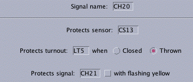

Signal Table
 All the signals that JMRI knows about can be referenced
using the "Signal Table" tool in the Tools menu of most JMRI programs.
All the signals that JMRI knows about can be referenced
using the "Signal Table" tool in the Tools menu of most JMRI programs.
JMRI provides several different things that can help with this:
In addition, there are people working on more advanced signalling
logic within the JMRI project. Although it's too early to talk
in detail, the idea is to provide ways of driving semi-prototypical
signalling logic, including CTC dispatching and interlocking,
without requiring the user to write any Java code. The
jmriusers discussion group
will have more info on this as it becomes available.
Signal Table
All the signals that JMRI knows about can be referenced
using the "Signal Table" tool in the Tools menu of most JMRI programs.
As the signal changes, for whatever reason, the current appearance will show in the table. You can also click on the appearance button to cycle through red, yellow and green.
If you're interested in having your signals carry "human readable" names, you can click in the "user name" column and change that information to whatever you want.
To define a new signal, click on the "Add.." button. It will prompt you for the type (run off turnout outputs; SE8c; etc), and whatever setup information is needed.
This information is saved with the configuration in an XML file, along
with control panel setup and similar stuff. For more information
on creating and displaying panels, including how to show signals,
please see the
Panels pages
and the pages on the
Cornwall Railroad control panel.
Simple Signal Logic

Much of signalling can be boiled down to "a signal goes red when a train
can't safely enter the block it protects; it goes yellow when the following
block can't be entered". Although that's a simplication, it can serve
as a powerful starting point for signalling logic.
The Simple Signal Logic tool allows you to configure JMRI to use that type of logic to set the appearance of a signal. Using the panel, you enter information on:
A worked-out example is available on a separate page.
It's clear that this won't cover complicated interlockings
and similar situations, nor will it cover the speed-signalling
seen on some prototypes. But for simple block and route
signalling, it will do pretty well.
Automation classes
JMRI provides classes to help you write Java code to control
your layout. The most powerful of these are aimed
at general automation; see the
automation web page.
The
"Siglet" class
and it's kin are meant to make it
easy to write signal logic; a varient of these was used
for the Cornwall Railroad.
More documentation on these is clearly needed...
Toolkit
The entire
JMRI toolkit
is available for use if you really want to do something
in detail. JMRI provides control of most DCC and C/MRI systems,
with useful tools for manipulating turnouts, sensors, signals, locomotives,
etc as well as powerful tools for working on the user screen.
{kind=link}